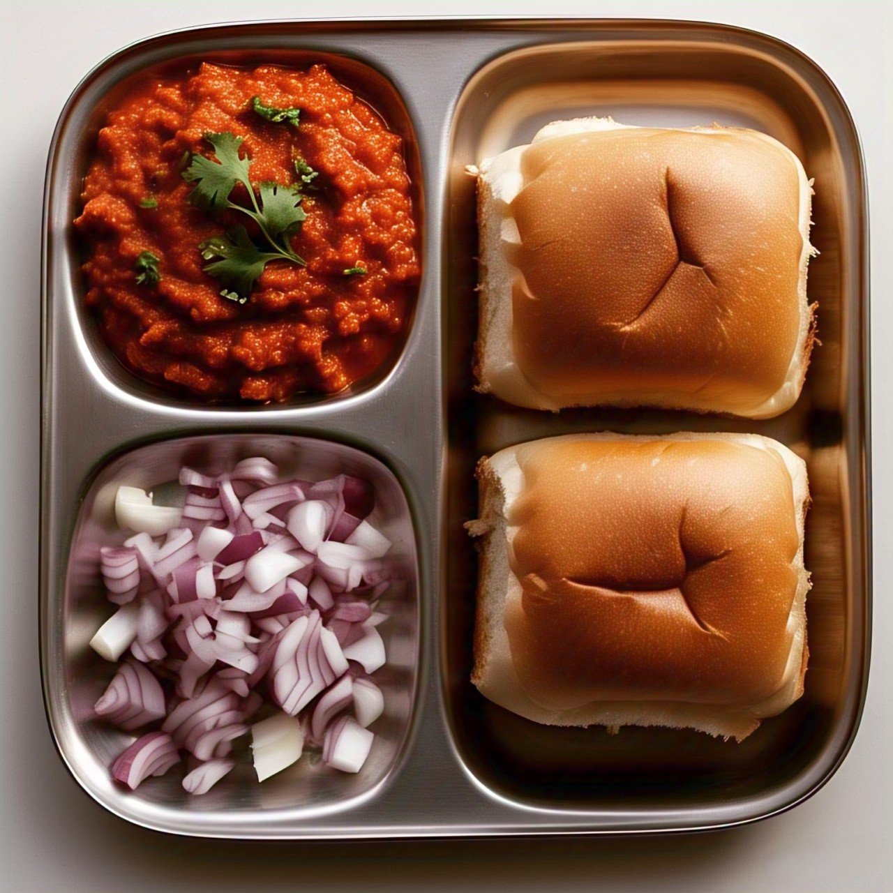

Savor spicy and buttery Pav Bhaji
Pav Bhaji
Ingredients:
- 4 pav (bread rolls)
- 3 potatoes (boiled and mashed)
- 1/2 cup peas (boiled)
- 1/2 cup cauliflower (boiled and mashed)
- 1 onion (finely chopped)
- 1 tomato (finely chopped)
- 1 green chili (chopped)
- 1 tbsp ginger-garlic paste
- 1 tsp turmeric powder
- 1 tbsp pav bhaji masala
- 1/2 tsp chili powder
- 2 tbsp butter
- Salt to taste
- Lemon wedges and chopped coriander (for garnish)

Recipe:
- Heat butter in a pan. Sauté onions, green chili, and ginger-garlic paste till fragrant.
- Add tomatoes and cook till soft. Add turmeric, chili powder, pav bhaji masala, and salt.
- Add mashed potatoes, cauliflower, and peas. Mix and mash everything together. Simmer for 10 minutes.
- Toast pav with butter on a pan till golden.
- Serve bhaji with pav, lemon wedges, and coriander on top.